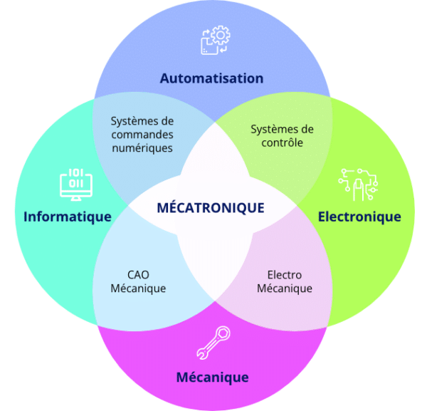
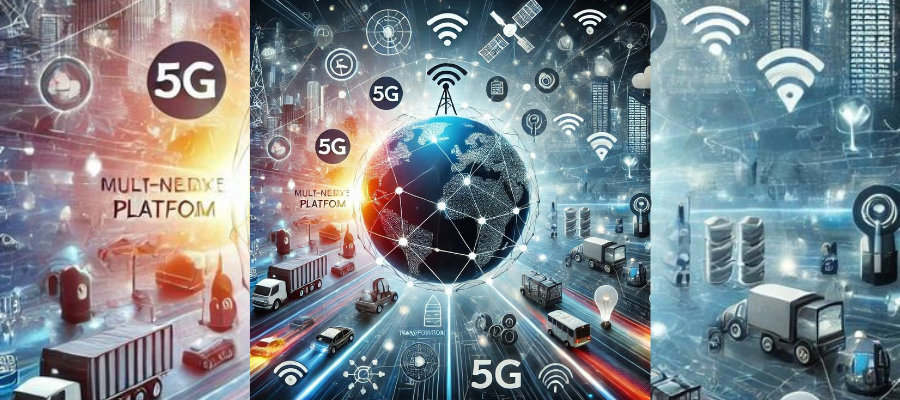
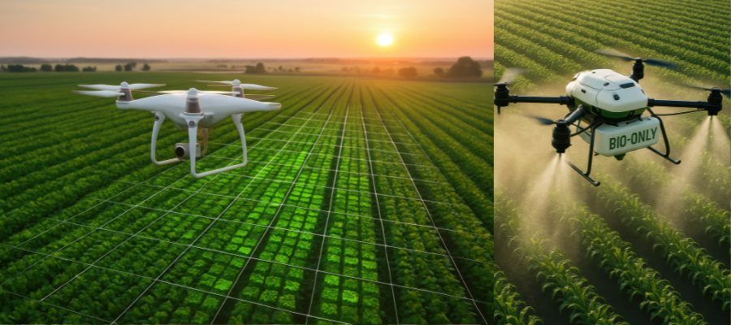
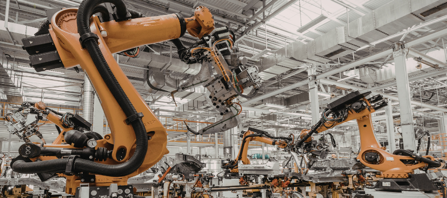

Il y a à peine un demi-siècle, un robot n'existait que dans les pages d'un roman de science-fiction. Aujourd'hui, des millions de systèmes mécatroniques travaillent en silence dans nos usines, nos hôpitaux, nos véhicules et même dans nos corps. La mécatronique — cette discipline qui fusionne la mécanique, l'électronique, l'informatique et le contrôle-commande — est peut-être la révolution industrielle la plus profonde que l'humanité n'ait jamais connue.
Qu'est-ce que la Mécatronique ?
Le terme « mécatronique » fut inventé en 1969 par l'ingénieur japonais Tetsuro Mori, chez Yaskawa Electric. À l'origine, il désignait simplement la combinaison des mots mécanique et électronique. Depuis, la définition s'est considérablement enrichie. IEEE
Aujourd'hui, la mécatronique est reconnue comme une discipline à part entière, définie par l'IEEE comme : la conception synergique de systèmes mécaniques et électroniques, intégrée avec le contrôle informatique, pour créer des produits et des processus fonctionnellement efficaces.
« La mécatronique n'est pas la somme de ses parties — c'est une philosophie de conception qui abolit les frontières entre le monde physique et le monde numérique. »
— Prof. Rolf Isermann, Technische Universität Darmstadt
Les quatre piliers fondateurs

- Mécanique — structures, actionneurs, transmissions, matériaux avancés
- Électronique — capteurs, microcontrôleurs, puissance, circuits embarqués
- Informatique — algorithmes, intelligence artificielle, traitement temps réel
- Contrôle-commande — systèmes de régulation, feedback, adaptation autonome
L'Industrie 4.0 : l'Usine qui Pense
La quatrième révolution industrielle — dite Industrie 4.0 — est en grande partie le fruit de la mécatronique avancée. Les usines d'aujourd'hui ne sont plus de simples sites de production ; ce sont des organismes intelligents, capables de s'adapter en temps réel à la demande, aux pannes et aux conditions environnementales. WEF
Des entreprises comme Siemens, BMW ou FANUC déploient des cellules de production entièrement automatisées où robots collaboratifs (cobots), jumeaux numériques et systèmes de vision artificielle coexistent. La personnalisation de masse — jadis oxymore économique — devient réalité.

Les Cobots : quand la machine devient collègue
Contrairement aux robots industriels classiques isolés derrière des cages, les cobots (robots collaboratifs) sont conçus pour opérer aux côtés des humains. Grâce à une combinaison de capteurs de force, de vision stéréoscopique et d'algorithmes de détection de collision, ils s'arrêtent instantanément au moindre contact imprévu. Universal Robots
Mécatronique Médicale : Réparer le Corps Humain
L'une des applications les plus bouleversantes de la mécatronique se joue dans le domaine médical. Des membres bioniques aux exosquelettes de rééducation, en passant par la chirurgie assistée par robot, la frontière entre l'ingénierie et la biologie s'efface progressivement.
Les prothèses bioniques nouvelle génération
La société Össur et le MIT Media Lab ont développé des prothèses de membres inférieurs intégrant des capteurs myoélectriques capables de lire les signaux nerveux résiduels du patient. Le système traduit ces micro-impulsions électriques en mouvements précis — permettant à un amputé de courir, monter des escaliers, ou même danser. MIT Media Lab
- Capteurs EMG (électromyographiques) lisant les signaux musculaires
- Processeur embarqué analysant l'intention de mouvement en 20 millisecondes
- Actionneurs électromagnétiques linéaires traduisant le signal en geste
- Retour haptique transmettant au patient une sensation de pression et de texture
- Apprentissage adaptatif personnalisant le comportement à la démarche de chaque utilisateur
« Nous ne réparons plus le corps humain — nous l'augmentons. La prochaine génération de prothèses surpassera biologiquement le membre naturel dans de nombreux contextes. »
— Dr. Hugh Herr, MIT Media Lab — TED Talk, 2014
Chirurgie robotique : précision nanométrique
Le système Da Vinci, développé par Intuitive Surgical, est devenu l'emblème de la chirurgie mécatronique. Grâce à des bras robotisés à sept degrés de liberté, un chirurgien opère depuis une console, ses mouvements filtrés des tremblements naturels de la main et amplifiés en précision. Des milliers de procédures bénéficient chaque année de cette technologie. Intuitive Surgical
Révolution du Transport : Vers le Véhicule Autonome
La voiture autonome n'est pas simplement un véhicule avec un ordinateur — c'est un robot mécatronique de plusieurs tonnes se déplaçant à haute vitesse dans un environnement imprévisible. Sa conception requiert la convergence de dizaines de disciplines : LiDAR, vision par ordinateur, systèmes de frein-by-wire, direction électronique, fusion de capteurs et prises de décision temps réel.
Tesla, Waymo, Mercedes et BYD investissent des milliards dans ces architectures. Le niveau SAE 4 d'autonomie est aujourd'hui opérationnel dans plusieurs villes du monde. SAE International J3016
Systèmes avancés de robotique mécatronique appliqués au transport autonome
Agriculture de Précision : Nourrir 10 Milliards d'Humains
Un secteur souvent oublié dans les discussions sur la haute technologie est pourtant l'un des terrains d'innovation mécatronique les plus actifs : l'agriculture. Face aux défis climatiques et à la pénurie de main-d'œuvre rurale, la mécatronique agricole offre des solutions concrètes et immédiates. FAO — Organisation des Nations Unies pour l'alimentation

- Tracteurs autonomes guidés par GPS centimétrique et vision artificielle
- Drones de pulvérisation précision, réduisant l'usage des pesticides de 40% à 70%
- Robots de désherbage mécaniques éliminant les herbicides chimiques
- Systèmes d'irrigation intelligente pilotés par capteurs d'humidité et IA météo
- Machines de récolte adaptative ajustant leur comportement selon la maturité des fruits
L'Horizon 2040 : Ce que la Mécatronique Promet
Si les deux dernières décennies ont été marquées par la numérisation, les deux prochaines appartiennent à la physicalisation de l'intelligence — l'inscription de l'intelligence artificielle dans des corps mécaniques capables d'agir sur le monde réel.
Nanorobots médicaux : médecine de l'intérieur
Des équipes de recherche à l'ETH Zurich et à l'Université de Drexel travaillent sur des nanomachines capables de naviguer dans la circulation sanguine pour détecter et neutraliser des cellules cancéreuses, délivrer des médicaments à précision moléculaire ou effectuer des réparations au niveau cellulaire. ETH Zurich Research
Soft Robotics : la machine qui se déforme
La robotique souple (soft robotics) abandonne l'acier au profit d'élastomères, de matériaux à mémoire de forme et d'actionneurs pneumatiques inspirés des pieuvres et des éléphants. Ces robots peuvent s'insinuer dans des espaces impossibles et manipuler des objets fragiles sans les endommager. Soft Robotics Toolkit — Harvard

« D'ici 2040, la distinction entre "machine" et "organisme vivant" sera suffisamment floue pour forcer une redéfinition philosophique et juridique fondamentale. »
— Rapport de prospective, World Economic Forum, 2023
Enjeux Éthiques et Sociétaux
Aucune révolution technologique n'est sans ombres. La montée en puissance des systèmes mécatroniques soulève des questions essentielles sur lesquelles la société doit délibérer collectivement — et promptement.
- Emploi et reconversion — L'automatisation déplace des métiers entiers : comment accompagner les travailleurs ?
- Sécurité des systèmes autonomes — Qui est responsable lors d'un accident impliquant un robot ou un véhicule autonome ?
- Accès et équité — Les bénéfices de la mécatronique seront-ils accessibles aux pays en développement ou aggraveront-ils les inégalités mondiales ?
- Souveraineté technologique — La dépendance aux chaînes d'approvisionnement en semi-conducteurs crée des vulnérabilités géopolitiques majeures
- Augmentation humaine — Jusqu'où est-il éthique d'intégrer la machine au corps humain ?
Conclusion : Ingénieurs du Monde de Demain
La mécatronique est bien plus qu'une discipline d'ingénierie — c'est une vision du monde dans lequel les frontières entre le vivant et le construit, entre le physique et le numérique, entre la nature et l'artefact s'estompent progressivement. Elle exige des ingénieurs non seulement une maîtrise technique transversale, mais aussi une conscience aiguë de leurs responsabilités envers la société et la planète.
Le futur appartient à ceux qui savent faire dialoguer les disciplines, construire des ponts entre la mécanique de précision et l'intelligence artificielle, entre le code et l'acier. Ce futur s'écrit aujourd'hui, dans les laboratoires, les ateliers et les salles de classe du monde entier.
- IEEE Transactions on Mechatronics — Définition officielle et publications
- International Federation of Robotics — World Robotics Report 2024
- World Economic Forum — Klaus Schwab, La Quatrième Révolution Industrielle
- MIT Media Lab — Biomechatronics Group, Dr. Hugh Herr
- Intuitive Surgical — Technologie Da Vinci Surgical System
- SAE International — Niveaux d'automatisation des véhicules (J3016)
- ETH Zurich — Nanorobots dans la circulation sanguine, 2023
- Soft Robotics Toolkit — Harvard University, Wyss Institute
- FAO — Agriculture numérique et robots agricoles de précision
- Grand View Research — Collaborative Robot (Cobot) Market Analysis